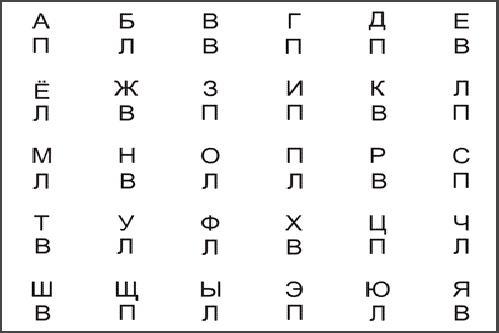

Оригинальный вариант Алфавита, предложенный Джоном Гриндером, выполнен на листе А4, разлинованном на 30 клеток, в каждую из которых вписаны по две буквы. Верхние буквы соответствуют алфавиту, а нижние - являются вспомогательными и обозначают слова: П - "правая", Л - "левая", В - "вместе" (иногда буква "В" заменяется буквой "О", что обозначает слово "обе" и имеет тот же смысл). И верхние и нижние буквы должны быть одного размера и стиля. Алфавит на листе  Для того чтобы играть в Алфавит с листа, его нужно повесить на уровне глаз, так, чтобы хорошо видеть все буквы. Правила игры следующие. Очень высоко поднимать руки нет необходимости - поднимайте их настолько, насколько это вам комфортно, но так, чтобы рука участвовала не меньше, чем от локтя. Когда вы дочитываете алфавит до конца, можете начать читать его по новому кругу, а можете пойти в обратном направлении (от Я к А), так, как вам будет интереснее. Главное, не усложняйте себе игру чрезмерно. Если чтение в прямом и в обратном порядке становится уже слишком легким и выполняется практически без ошибок, начните читать алфавит по столбцам, по строчкам, "змейкой" и т.п. Когда все варианты чтения алфавита выполняются легко, и необходимо еще усложнить игру, добавьте следующий элемент. Поднимая правую руку, одновременно поднимайте левую ногу, а поднимая левую руку - правую ногу. Поднимая обе руки - привставайте или приседайте, как вам удобнее. Помните, смысл игры заключается не в перегрузке сознания, а в появлении состояния высокой продуктивности - это не одно и то же. Поэтому сохраняйте ту степень сложности, при которой вы остаетесь достаточно успешными. Не бойтесь ошибаться, не цепляйтесь излишне за правила и относитесь к игре легко. Делается это просто. Вы расставляете одинаковое количество вспомогательных букв "Л", "П" и "В" в случайном порядке, кроме трех клеток. Под буквой алфавита "Л" обязательно ставится вспомогательная буква "П", под буквой алфавита "П" - ставится вспомогательная буква "Л", а под "В" - ставится вспомогательная буква "В" (если вместо вспомогательной буквы "В" вы используете "О", она ставится под буквой "О"). Егор Булыгин,
Вы читаете алфавит в естественном порядке, вслух произнося его буквы, и одновременно с произношением, поднимаете правую, левую или обе руки вместе, в зависимости от того, какая вспомогательная буква стоит под произносимой буквой (П, Л или В соответственно). При этом, вы придерживаетесь определенного ритма - того, который будет вам наиболее комфортен. В случае ошибки вы просто продолжаете играть дальше.
Одного Алфавита на листе обычно хватает на одну-две, максимум три игры, потому что мозг очень быстро запоминает соотношение букв и играть становится слишком легко. Поэтому периодически нужно рисовать новый Алфавит.
Сейчас существует также эволюционное продолжение этой игры Нового Кода НЛП - электронный Алфавит.
NLPING.ru
21.03.2007